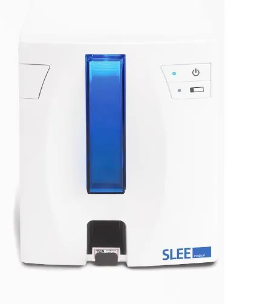
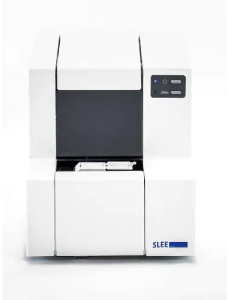
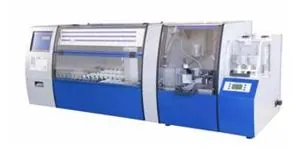
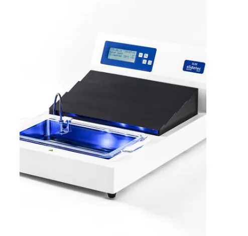

Aparat de inscriptionare automata a lamelor
SLEE medical
SLEE medical
Grație, pe de-o parte, unui design redefinit, atât la interior, cât și la exterior, iar pe de altă parte, utilizării unor materiale optimizate pentru funcția pe care fiecare componentă a mecanismului trebuie să o îndeplinească, microtomul rotativ semiautomat CUT 5062 înglobează tot ceea ce specialiștii laboratoarelor de anatomie patologică au imaginat pentru instrumentul care să le asigure siguranța obținerii unor secțiuni histologice conform așteptărilor, secțiune după secțiune, de fiecare data.
Pentru laboratoarele unde nu doar calitatea rezultatului este importantă, dar încărcarea și timpul sunt elemente ce trebuie gestionate optim.
Caracteristici tehnice:
•Grosimea de secționare:
Reglabilă între 0,5-100 μm, cu pași predefiniți pe următoarele intervale:
- De la 0,5 la 2 µm în pași de 0,5 µm
- De la 2 la 20 µm în pași de 1 µm
- De la 20 la 50 µm în pași de 2 µm
- De la 50 la 100 µm în pași de 5 µm
•Control:
-Panou de comandă și control cu comenzi intuitive și display
-Telecomandă (opțional)
•Degroșare (trimming):
-Motorizată, cu pas reglabil în intervalul 0-750 µm
•Avansul orizontal al port-piesei:
28 mm, motorizat, cu 2 viteze:
- viteza de apropiere, reglabilă: 75 / 150 / 300 / 600 µm/s
- viteza de deplasare, normală: 3.000 µm/s
Capacitatea de memorare a 2 poziții (pentru pozițiile de degroșare și de începere a secționării, de exemplu)
Avansul de tăiere controlat cu precizie, prin motor pas-cu-pas
•Cursa verticală a port-piesei:
-72 mm
•Retracția / cursă:
-Motorizată, programabilă în intervalul 0-200 µm
•Unghiul suportului de lame/cuțit:
-Reglabil între 0°-15°, cu gradații în incremenți de 1º, cu fixarea în orice poziție a intervalului
•Orientarea piesei:
-±8° pe axele X, Y cu auto-fixarea mecanică în poziția de “zero” și rotirea 360° în jurul axei Z
•Secționare:
-Tăiere cu lame de microtom, profil îngust / lat (pe același suport)
-Tăiere cu cuțit (opțional)
•Cursa suportului de lame/cuțit:
-35 mm, cu fixarea în orice poziție a căruciorului
•Suportul de lame/cuţit:
-Ansamblu format din 3 piese componente, cu 3 grade de libertate (deplasare pe X,Y și unghiulară), cu reglaj pentru acceptarea lamelor cu profil îngust și lat pe același suport și reglarea forței de apăsare a plăcii de presiune. Placa de presiune prelucrată din metal extradur și inelastic, pentru o presiune constantă și uniformă asupra lamei de microtom.
•Protecție:
-Sistem de blocare a roții de mână în orice poziție, prin mâner, sau prin mâner și/sau pârghie amplasată pe bază (opțional)
-Orientarea menghinei cu sistem de revenire la poziția de “zero” (vertical și orizontal)
-Bară de protecție împotriva tăierii accidentale în lama de microtom
-Sistem mecanic extractor de lame uzate
-Deplasarea laterală a suportului de lame
-Calea de rulare a căruciorului suportului de cuțit/lame gradată
-Tavă reziduuri cu suprafața largă de colectare
-Husă de protecție
•Dimensiuni (L x l x H):
-480×610×350 mm (incluzând roata de mână și tava colectoare)
•Greutatea:
-33 Kg

SLEE medical

SLEE medical

SLEE medical

SLEE medical